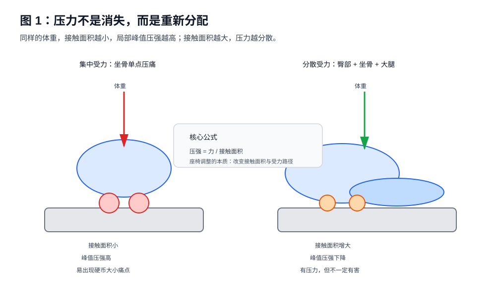
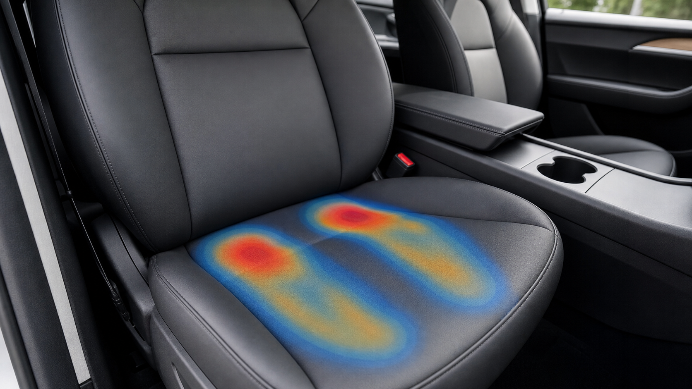

第一章 驾驶为什么会让人疼¶
1.1 坐着不是休息，而是一种静态负荷¶
很多人以为坐着是一种休息状态。实际上，从人体工程学角度看，坐姿并不是“没有负荷”，而是把站立时由双腿承担的部分重量，转移到了骨盆、臀部、大腿和靠背上。
站立时，身体重量主要通过：
头部 / 躯干
↓
骨盆
↓
髋关节
↓
大腿
↓
小腿
↓
足底
↓
地面
而坐下后，传力路径变成：
头部 / 躯干
↓
脊柱
↓
骨盆
↓
坐骨 + 臀部软组织 + 大腿后侧
↓
座椅
这意味着，坐姿并没有让重量消失，只是改变了重量的出口。
驾驶坐姿比普通办公坐姿更复杂。因为驾驶时不是静态坐在椅子上，而是同时存在三个约束：
- 臀部和大腿要承重；
- 右脚要持续控制油门和刹车；
- 双手和上身要与方向盘保持稳定距离。
这三个约束叠加后，驾驶者很容易出现某些区域长期受压或持续紧张。

下面的真实感示意图把同一个概念放回车内场景：红色区域不是“必然受伤”，而是提醒读者关注峰值压强；蓝色和橙色区域表示压力被分散到更大的接触面。

1.2 压力不会消失，只会重新分配¶
调整座椅时，一个常见误解是：
“我把座椅调到某个位置，就能让压力消失。”
这不可能。
身体重量是恒定的。座椅调整只能改变压力分布。例如：
座椅较低：
坐骨压力 ↑
大腿承重 ↓
骨盆后倾风险 ↑
座椅适当升高：
坐骨峰值压力 ↓
大腿参与承重 ↑
接触面积 ↑
座椅过高：
大腿后侧压力 ↑
腘窝或神经受压风险 ↑
脚部控制负担 ↑
因此，正确目标不是“没有压力”，而是：
让压力落在更耐压、更适合承重的区域，并避免局部峰值压强过高。
人体较适合承重的区域包括：
- 臀大肌覆盖区域；
- 坐骨结节正下方；
- 大腿后侧较宽区域；
- 靠背支撑下的胸背与腰背区域。
较不适合长期承重的区域包括：
- 尾骨附近；
- 坐骨后缘的薄软组织区域；
- 腘窝附近；
- 大腿后侧神经血管集中的局部点；
- 臀下褶皱被座椅边缘横向顶住的位置。
1.3 压强比重量更重要¶
很多座椅不适并不是因为总重量太大，而是因为单位面积承受的压力过高。
力学上可以简化为：
压强 = 力 / 接触面积
同样的体重，如果接触面积很小，就会形成高压点；如果接触面积较大，峰值压强就会下降。
例如，同样是上半身重量压向座椅：
集中模式：
体重
↓
● 坐骨局部点
↑
接触面积小，峰值压强高
分散模式：
体重
↓
████████████
臀部 + 坐骨 + 大腿后侧
接触面积大，峰值压强低
这解释了一个常见现象：
调整后“大腿压力更明显”，但“坐骨单点疼减少”。
这并不矛盾。因为压力感觉变明显，可能只是更多组织开始参与承重；而真正有害的局部峰值压强反而下降了。
因此，在判断座椅是否合理时，不能只问：
“有没有压力？”
更应该问：
“压力是否集中在一个小点？”
“压力是否伴随麻、刺、过电感？”
“压力是否随着驾驶时间持续加重？”
“压力是否离开座椅后迅速缓解？”
1.4 为什么坐着 20 到 30 分钟后才开始疼¶
很多人不是一坐下就疼，而是开车二三十分钟后才开始不舒服。这通常与软组织持续受压后的缺血、代谢堆积和神经敏感性上升有关。
可以把它理解成一个累积过程：
低压分散状态：
压力较低 → 血流仍可通过 → 疲劳积累慢 → 很久才不舒服
高压集中状态：
压力集中 → 局部血流受限 → 代谢废物堆积 → 疼痛阈值被触发
因此，座椅调整是否有效，不能只看刚坐上去的感觉。刚坐上去舒服，不代表 60 分钟后仍然合理；刚坐上去有承托感，也不代表一定有害。
更可靠的评价时间点是：
- 上车后 5 分钟：初始适应；
- 20 到 30 分钟：软组织受压开始显现；
- 45 到 60 分钟：真实耐受性显现；
- 90 分钟以上：长途驾驶适配性显现。
1.5 驾驶为什么比办公更容易诱发右侧不适¶
驾驶和办公椅最大的不同，是右腿不是完全放松的。
在自动挡或电动车上，右脚要持续完成：
- 油门开度控制；
- 刹车切换；
- 脚跟支点稳定；
- 脚踝小幅屈伸；
- 大腿和髋部的方向控制。
因此，右腿不仅是承重组织，还是操作系统的一部分。尤其在 Tesla Model 3 这种电门响应比较直接的车型上，右脚通常需要保持更细腻的控制。
这会带来一个问题：
右侧大腿和臀部同时承担“静态压力”和“动态控制”。
左腿相对放松，右腿持续工作，久而久之就可能出现右侧更明显的：
- 大腿后侧紧硬；
- 臀下压迫；
- 坐骨侧边挤压；
- 髋部不对称；
- 小腿或脚踝疲劳。
这也是为什么有些驾驶者会感觉：
“只要完全离开油门，右侧压力瞬间减轻。”
这说明不适并不完全来自座椅静态压迫，还可能来自右腿踩踏时造成的肌肉持续收缩和骨盆微小旋转。
1.6 坐骨承重是正常的，坐骨单点疼才是不合理的¶
很多人在出现坐骨不适后，会误以为：
“是不是不应该让坐骨承重？”
不是。
坐骨结节本来就是坐姿下的重要承重点。真正的问题不是坐骨是否承重，而是：
- 压在坐骨哪个部位；
- 是否由两侧均匀承重；
- 是否有臀部和大腿一起分担；
- 是否形成硬币大小的单点疼痛；
- 是否伴随尾骨方向疼痛或大腿麻刺。
可以把坐骨受力分成三类：
合理承重：
两块坐骨正下方有稳定承托，臀部和大腿一起分担。
压力集中：
某一侧坐骨出现小范围压痛点，接触面积不足。
错误位置：
压力偏向坐骨后缘或尾骨方向，常伴随骨盆后倾。
所以，一个好的座椅调整结果不是“感觉不到坐骨”，而是：
坐骨有存在感，但不是尖锐、局部、持续加重的疼痛。
1.7 第一章小结¶
驾驶疼痛不是单一原因造成的。它通常来自四类因素叠加：
- 压力分布问题：重量集中在坐骨、小腿或大腿某个局部点。
- 骨盆姿态问题：后倾、过度前倾或左右旋转导致受力偏移。
- 肌肉张力问题：腘绳肌、臀肌、髋屈肌紧张，让坐下时更容易产生压迫。
- 操作负荷问题：右脚控制油门和刹车，让右腿承担额外动态负荷。
因此，座椅调整的目标不是“调到完全没有感觉”，而是：
- 坐骨稳定但不尖锐；
- 臀部和大腿共同承重；
- 大腿有压力但不麻、不刺；
- 腰背被靠背接住但不被硬顶；
- 右脚控制踏板自然，不需要身体前探或大腿持续绷紧；
- 30 到 60 分钟后不适没有明显累积。
从下一章开始，我们进入真正的核心：骨盆。因为几乎所有坐姿受力问题，最后都会回到骨盆的位置。